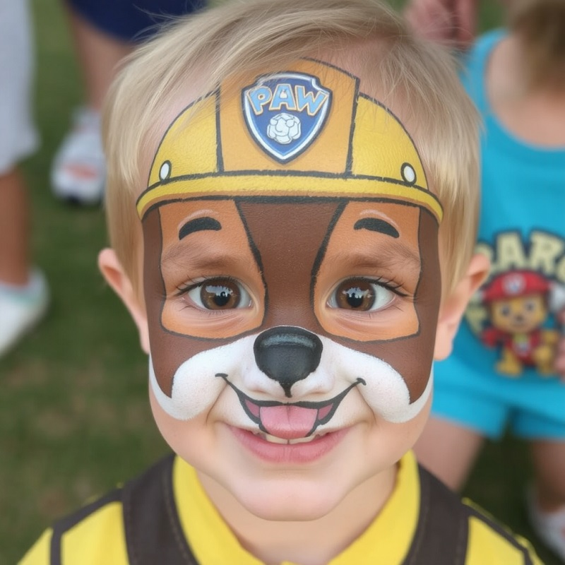

Proč je malování na obličej ideální pro hasičské a myslivecké akce?
Malování na obličej je jednou z těch aktivit, které okamžitě přitahují pozornost. Ať už jde o malé děti, které se promění v roztomilé zvířátko, nebo dospělé, kteří si užívají chvíle zábavy při ztvárnění superhrdiny nebo oblíbené postavy z filmu – malování na obličej nikdy nevyjde z módy. A co je nejlepší? Tento trend je skvělý pro různé typy akcí, včetně těch, které pořádají sbory dobrovolných hasičů nebo myslivci.
Kreativní malování pro děti i dospělé: Hasící motivy na tváři
Pro hasičskou akci si děti mohou nechat namalovat plamene, hasičské helmy nebo celé hasičské masky, které je promění v malé hrdiny. Dospělí si zase mohou vybrat tematické motivy, které odpovídají charakteru akce. Na akci pořádané myslivci zase vytvoříte tváře s motivy jelenů, divočáků a dalších lesních zvířat.
A nezapomeňme na hasiče z oblíbené pohádky Paw Patrol! Představte si, jak děti na vesnické akci zázrakem promění své obličeje v Chase, statečného policejního psa, který je připraven na každou misi, nebo si dají barvy a stanou se Marshall, roztomilým hasičem s veselým výrazem. Malování na obličej inspirované těmito postavičkami z Paw Patrol je skvélé nejen pro malé fanoušky této pohádky, ale i pro rodiče, kteří si rádi užívají chvilky zábavy.
Pro více informací o Paw Patrol a jejích postavičkách
Navštivte oficiální stránky: Paw Patrol

Fotokoutek pro všechny: Jak si užít vesnické oslavy s přáteli a rodinou
Fotokoutek je dalším neuvěřitelně populárním způsobem, jak zpestřit každou akci. Na vesnicích, kde jsou často silné komunitní vztahy, je fotokoutek skvělým způsobem, jak si lidé mohou uchovat vzpomínky na událost, se kterou mají spojené spoustu hezkých emocí.
Fotokoutek přitahuje všechny věkové kategorie, od dětí po seniory, a je ideálním způsobem, jak se lidé mohou „vyřádit“ a zábavně si zaznamenat okamžiky z akce.

Proč fotokoutek na vesnické akce?
- Zábava pro všechny: Fotokoutek je bez věkových hranic. Děti, rodiče, dokonce i prarodiče si mohou pořídit vtipné fotografie, které je budou bavit.
- Vytvoří vzpomínky: Ať už si lidé oblečou vtipné kostýmy, nebo si jen pořídí společnou fotografii na památku, fotokoutek se stane nezapomenutelnou součástí každé akce.
- Skvělá příležitost pro komunity: Fotky z akce mohou být sdíleny na sociálních sítích, což pomůže vytvářet silnou komunitu a přitahovat i další účastníky na budoucí akce.
Jak vytvořit nezapomenutelné vzpomínky na akcích s dobrovolnými hasiči
Pokud pořádáte akci na vesnici, kde se spojí síly sboru dobrovolných hasičů nebo myslivců, můžete obohatit program o malování na obličej a fotokoutek. Tato zábavná aktivita poskytne příležitost nejen pro děti, ale i pro dospělé, aby si užili chvíle plné smíchu a radosti. Co je lepší než akce, kde si lidé mohou nechat namalovat obličeje a poté se fotit s přáteli?
Závěr: Malování a fotokoutek – klíč k úspěšné hasičské oslavě
Pokud hledáte způsob, jak oživit vaši vesnickou akci pořádanou sborem dobrovolných hasičů nebo myslivci, nezapomeňte na malování na obličej a fotokoutek. Tato kombinace zábavných aktivit může přitáhnout pozornost nejen dětí, ale i dospělých, kteří budou mít příležitost zapojit se a vytvořit si vzpomínky na nezapomenutelnou akci.
Pro více informací o tom, jak zajistit profesionální malování na obličej nebo fotokoutek pro vaši akci, navštivte naše stránky Ksychtíkovo.cz. Pomůžeme vám vytvořit jedinečnou atmosféru pro každou událost.